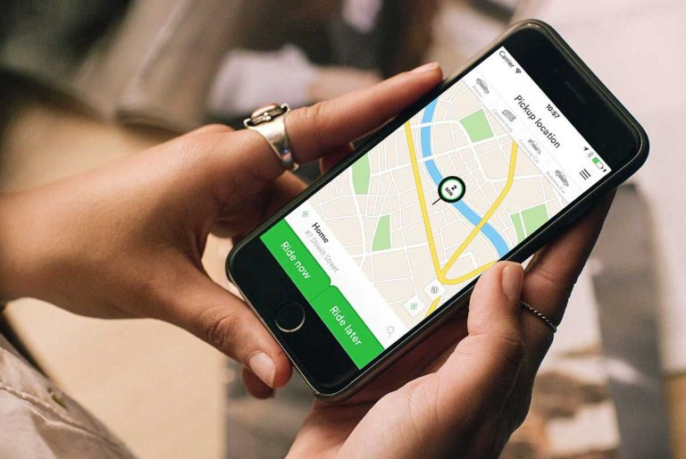
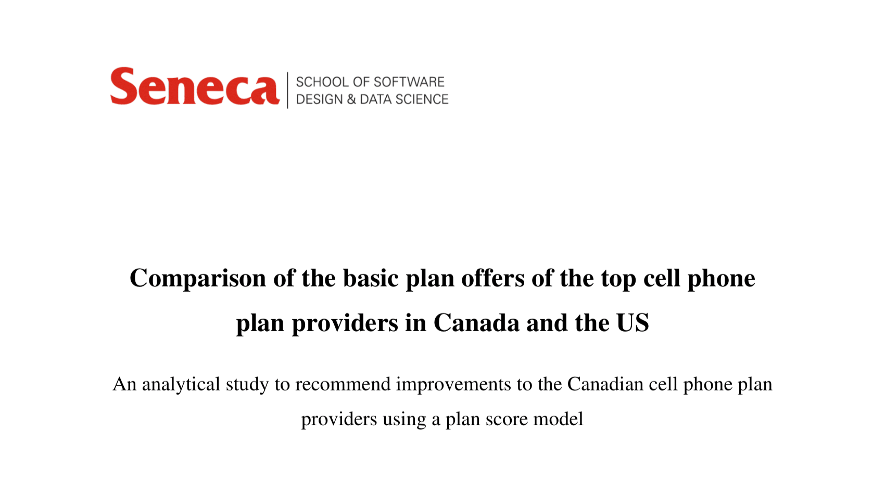
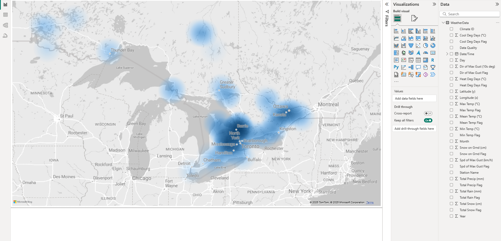

Tareq Haboukh
Business & Data Analyst | Operations | Start‑Ups


Business & Data Analyst | Operations | Start‑Ups


Dynamic and results-driven Business Analyst with 6+ years of experience in data analytics and process optimization. Expertise in ETL workflows, predictive analytics, and data visualization using tools like Power BI and Tableau. Proven track record of collaborating with cross-functional teams to deliver actionable insights, drive efficiency, and contribute to business success.
With a strong background in Business Analytics and hands-on experience at Careem Networks and EllisDon Corporation, I am confident in my ability to contribute effectively to your team. My time at Careem, where I joined during its early start-up phase, allowed me to explore various business areas and develop strong analytical and problem-solving skills while collaborating across departments such as sales, marketing, and business intelligence. This experience contributed to Careem’s rapid growth and its eventual acquisition by Uber.
After completing my studies at Seneca College, I transitioned into my first professional role in Canada with EllisDon Corporation. This opportunity enabled me to apply my academic learning in a corporate setting, further developing my skills in understanding business requirements, optimizing workflows, and delivering actionable insights. Working across teams, I contributed to improving operational efficiency and organizational success, which reinforced my passion for data-driven problem-solving.
I am motivated by solving real-world problems, helping people make informed decisions, and enabling economic opportunities through thoughtful and effective use of data. Whether it’s supporting operational improvements or driving strategic insights, I find purpose in creating solutions that have a measurable, positive impact on both individuals and organizations.
Power BI Reporting Initiative: Led a Power BI initiative to build dashboards and create specific and complex reports that serve multiple sites based on their individual requirements, by gathering inputs from project agreements or directly communicating with site GMs. This enabled fast-paced, agile delivery of ad hoc reports.
Energy Reporting and ETL Optimization: Optimized ETL pipelines for energy reports to enable faster, autonomous data collection and integrated government weather data into reporting databases for richer context and analysis.
Survey Automation and Vendor Management: Managed the survey process and identified a new vendor after assessing multiple options to improve performance. Fully automated the process from filtering data and assigning services to distributing surveys and building a Power BI report that sends email notifications with the data ready to be shared when surveys are due.
Compliance Project: Led the initial phase of the driver permit application process after Careem received its operating license. Designed workflows, managed driver data, and built databases linked to performance and quality teams to prioritize permits for high-performing drivers.
Scooter Delivery Launch: Analyzed scooter driver performance in Jordan, showing better delivery times and trips per hour compared to regular drivers. Worked with third parties to plan demand and helped introduce installment plans, making it easier for new drivers to join and supporting the scooter delivery launch.
Geo-fenced Locations: Analyzed hundreds of thousands of GPS data points to identify high-density locations and created geo-fenced pick-up points on the app, enhancing customer experience by guiding riders to optimal pick-up spots.
Performance Project: Developed a weekly plan addressing peak-hour demand by forming a task force of high-performing drivers and motivating them with targeted in-app messages and incentives.
A personal reflection on my experience working at Careem during the time of its data breach, sharing lessons on data security, internal response, and what it taught me about trust and transparency.
Read my blog post on Careem's Data Breach: What I Learned from the Inside
This project was completed as part of my final semester at Seneca College. It analyzed Canadian cell phone plans compared to U.S. offerings, with the goal of providing a data-driven assessment of how Canadian plans perform in terms of value, features, and cost. Our team developed a scoring model that incorporated both qualitative and quantitative data.
This project demonstrates a dynamic Power BI pipeline that retrieves and processes historical weather data from Environment Canada. It uses Power Query (M) to extract file metadata, filter by year, and combine multiple CSV files into a structured dataset.
This is a Flask-based web application I developed and deployed using Render. It demonstrates my ability to build and host a Python web app with dynamic functionality and API endpoints. You can view the source code here: project_one repository on GitHub.
View the full API documentation »
Feel free to reach out to discuss projects or opportunities!
Email: tareq.haboukh@gmail.com